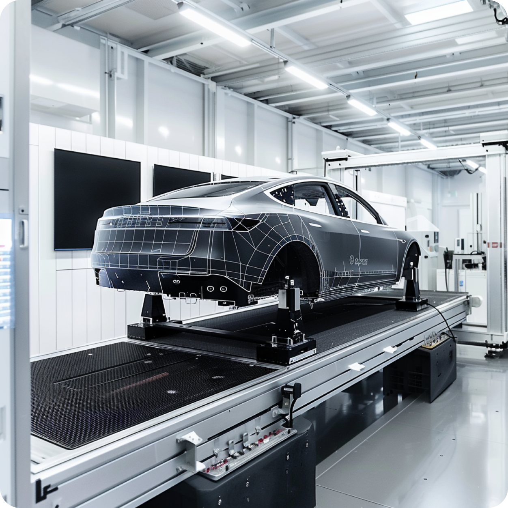

Our Service
AI Impact Explorer는 인공 지능(AI) 기술이 의료, 금융, 교육, 제조, 엔터테인먼트 등 다양한 산업 분야에 미치는 영향을 탐색하고, 실제 적용 사례와 데이터를 기반으로 한 깊이 있는 분석을 제공하는 정보 플랫폼입니다.
이 웹사이트는 AI 기술의 빠른 발전과 다양한 산업에의 폭넓은 적용이 가져오는 현재와 미래의 경제적, 사회적 변화를 이해하는 데 도움을 주기 위해 만들어졌습니다.
최근 몇 년간 AI는 머신러닝, 자연어 처리, 로봇 공학 등의 분야에서 큰 진전을 보이며, 이러한 기술이 실생활에 점점 더 깊숙이 통합되고 있습니다.
이 웹사이트는 AI 기술이 각 산업 분야에서 어떻게 작업 방식을 변화시키고, 새로운 기회를 창출하며, 기존 문제를 해결하는 데 기여하는지에 대한 통찰력을 제공합니다.
의료 분야
:AI 진단 시스템
인공 지능은 의료 산업의 혁신을 주도하고 있습니다. 최첨단 AI 기술이 의사의 진단을 보조하고, 치료 방법을 혁신하여 환자의 삶의 질을 향상시키는 사례를 소개합니다.
AI 기반 피부암 진단
최근 연구에 따르면 AI는 피부암의 초기 단계를 정확하게 진단하는 데 있어 전문 피부과 의사와 동등한 성능을 보여주고 있습니다. 하버드 의과대학과의 협력으로 개발된 AI 시스템은 수천 개의 피부 이미지를 분석하여 피부암을 진단하고, 이를 통해 환자에게 더 빠르고 정확한 치료 방법을 제시합니다.
금융 기술
:사기 탐지 시스템
AI는 금융 산업에서 사기를 방지하고 거래의 안정성을 보장하는 데 핵심적인 역할을 하고 있습니다. 이 섹션에서는 AI가 어떻게 비정상적인 거래 패턴을 식별하고 금융 사기를 줄이는지를 보여줍니다.
AI를 통한 실시간 사기 거래 감지
국제 은행 그룹은 AI 기반 분석 도구를 도입하여 거래가 이루어지는 즉시 이상 거래를 감지합니다. 이 시스템은 거래 데이터의 비정상적인 패턴을 자동으로 식별하고, 의심스러운 거래를 실시간으로 차단하여 은행과 고객의 자산을 보호합니다.
교육 분야
:개인화된 학습 경험
AI 기술이 교육 분야에서 개인화된 학습 경험을 제공하여 학생들의 학업 성과를 개선하는 방법을 살펴봅니다.
맞춤형 학습 플랫폼
AI 기반 교육 플랫폼은 학생들의 학습 스타일과 성과를 분석하여 개인에 맞춤화된 학습 콘텐츠를 제공합니다. 이를 통해 학생들은 자신의 약점을 보완하고 강점을 발전시킬 수 있습니다.

제조 분야
:스마트 공장 시스템
AI 기술이 제조 공정을 어떻게 혁신하고 있는지, 특히 생산 효율성을 증대시키고 품질 관리를 자동화하는 방법을 소개합니다.
AI 기반 품질 관리 시스템
대규모 자동차 제조업체는 AI를 활용하여 부품의 품질 검사를 자동화합니다. 이 시스템은 카메라와 센서를 통해 제조 과정에서 발생할 수 있는 불량품을 실시간으로 감지하고 분류하여, 최종 제품의 품질을 보장합니다.
엔터테인먼트 분야
:영화 제작
AI가 영화 제작 과정을 어떻게 변화시키고 있는지, 특히 시나리오 분석부터 캐스팅, 특수 효과에 이르기까지 다양한 방면에서 기여하는 사례를 살펴봅니다.
AI 기반 시나리오 분석
헐리우드의 한 영화 스튜디오는 AI를 활용하여 시나리오의 감정 분석을 수행하고, 각 장면에 맞는 캐스팅과 특수 효과를 추천합니다. 이로 인해 제작 과정이 더욱 효율적이고 창의적으로 변화하고 있습니다.